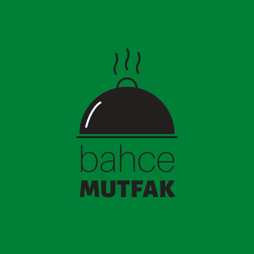

<nav class="navbar navbar-expand-lg navbar-light bg-light">
    <div class="container-fluid">
      <a class="navbar-brand" routerLink="">
        
      </a>
      <button class="navbar-toggler" type="button" data-bs-toggle="collapse" data-bs-target="#navbarNav" aria-controls="navbarNav" aria-expanded="false" aria-label="Toggle navigation">
        <span class="navbar-toggler-icon"></span>
      </button>
      <div class="collapse navbar-collapse" id="navbarNav">
        <ul class="navbar-nav ms-auto">
          <li class="nav-item">
            <a class="nav-link" routerLink=""  routerLinkActive="active-link" [routerLinkActiveOptions]="{exact:true}" >Ana Sayfa</a>
          </li>
          <li class="nav-item">
            <a class="nav-link" routerLink="menu" routerLinkActive="active-link">Menü</a>
          </li>
          <li class="nav-item">
            <a class="nav-link" routerLink="about" routerLinkActive="active-link">Hakkımızda</a>
          </li>
          <li class="nav-item">
            <a class="nav-link" routerLink="contact" routerLinkActive="active-link">İletişim</a>
          </li>
        </ul>
      </div>
    </div>
  </nav>